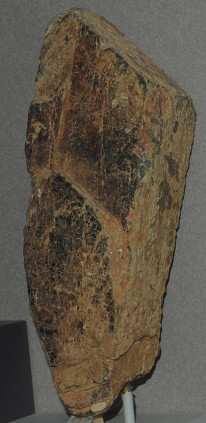

|

| (Ce,La,Y)CO3(F,OH)
This sample of bastnaesite is displayed in the Smithsonian Museum of Natural History. Bastnaesite is a compound of cerium, lanthanum and yttrium with the composition (Ce,La,Y)CO3(F,OH). The sample at left is about 10x30 cm and is from Ambatafangshana, Madagascar.
|